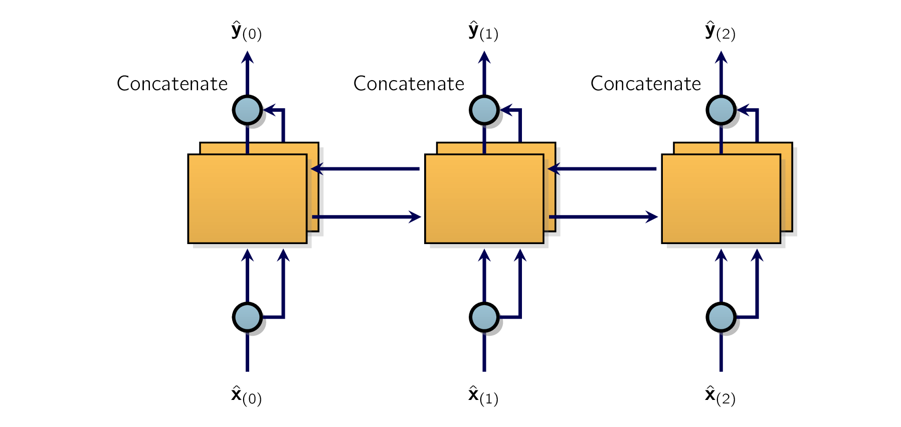
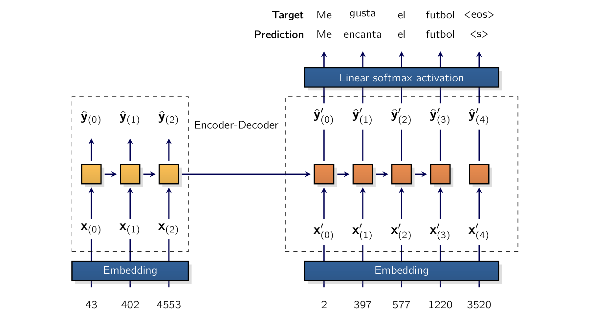

At each time step, a regular recurrent layer only looks at past and present inputs before generating its output. In other words, it is causal, meaning it cannot look into the future.
This type of RNNRecurrent Neural Networksa type of ANN designed to process sequential data, such as text, speech, or time series, by passing information through loops from one step to the next makes sense when forecasting time series, or in the decoder of a sequence-to-sequence (seq2seq) model. But for tasks like text classification, or in the encoder of a seq2seq model, it is often preferable to look ahead at the next words before encoding a given word. For example, consider the phrases “the right arm”, “the right person”, and “the right to speak”: to properly encode the word “right”, we need to look ahead.
One solution is to run two recurrent layers on the same inputs, one reading the words from left to right and the other reading them from right to left, then combine their outputs at each time step, typically by concatenating them. This is what a bidirectional recurrent layer does (see Figure 14-4).

To make our sentiment analysis model bidirectional, we can just set bidirectional=True
However, once we do that, we must adjust our model a bit. In particular, we must double the input dimension of the output nn.Linear layer, since the hidden states will double in size:
We must also concatenate the forward and backward hidden states of the GRU’s top layer
before passing the result to the output layer. For this, we can replace the last line of the
forward() method (i.e., return self.output(hidden_states[-1])
Let’s see how the middle line works:
-
Until now, the shape of the hidden states returned by the nn.GRU module was
[number of layers, batch size, hidden size][2, 256, 64]bidirectional=True[4, 256, 64]hidden_states[-2:] -
We also need to concatenate the forward and backward states. One way to do this is to permute the first two dimensions of the top hidden states using
permute(1, 0, 2)[256, 2, 64]reshape(-1, n_dims)n_dims[256, 2 * 64]
In this model we only use the last hidden states, ignoring the outputs at each time step. If you ever want to use the outputs of a bidirectional module, be aware that its last dimension’s size will be doubled. You can try training this model, but you will not see any improvement in this case, because the first model actually overfit the training set, and this new version makes it even worse: it reaches over 99validation set. To fix this, you could try to regularize the model a bit more, reduce the size of the model, or increase the size of the training set. But let’s instead try something different: using pretrained embeddings.
Our model was able to learn useful embeddings for thousands of tokens, based on just 25,000 movie reviews: that’s quite impressive! Imagine how good the embeddings would be if we had billions of reviews to train on. The good news is that we can reuse word embeddings even when they were trained on some other (very) large text corpus, even if it was not composed of movie reviews, and even if they were not trained for sentiment analysis. After all, the word “amazing” generally has the same meaning whether you use it to talk about movies or anything else.
Since we used pretrained tokens for the BERT model, we might as well try using its embedding layer.
First, we need to download the pretrained model using the AutoModel.from_pretrained()
bert_model = transformers.AutoModel.from_pretrained("bert-base-uncased")
bert_model.embeddings.word_embeddings
As you can see, this BERT model is implemented using PyTorch, and it contains a regular
nn.Embedding layer. We could just replace our model’s nn.Embedding layer with this one
(and retrain our model), but we can keep models cleanly separated by initializing our own
nn.Embedding layer with a copy of the pretrained embedding matrix. This can be done using the
Embedding.from_pretrained()
class SentimentAnalysisModelPreEmbeds(nn.Module):
def __init__(self, pretrained_embeddings, n_layers=2, hidden_dim=64,
dropout=0.2):
super().__init__()
weights = pretrained_embeddings.weight.data
self.embed = nn.Embedding.from_pretrained(weights, freeze=True)
embed_dim = weights.shape[-1]
self.gru = nn.GRU(embed_dim, hidden_dim, num_layers=n_layers,
batch_first=True, dropout=dropout, bidirectional=True)
self.output = nn.Linear(2 * hidden_dim, 1)
def forward(self, encodings):
embeddings = self.embed(encodings["input_ids"])
lengths = encodings["attention_mask"].sum(dim=1)
packed = pack_padded_sequence(embeddings, lengths=lengths.cpu(),
batch_first=True, enforce_sorted=False)
_outputs, hidden_states = self.gru(packed)
n_dims = self.output.in_features
top_states = hidden_states[-2:].permute(1, 0, 2).reshape(-1, n_dims)
return self.output(top_states)
torch.manual_seed(42)
imdb_model_bert_embeds = SentimentAnalysisModelPreEmbeds(
bert_model.embeddings.word_embeddings).to(device)
n_epochs = 10
xentropy = nn.BCEWithLogitsLoss()
optimizer = torch.optim.NAdam(imdb_model_bert_embeds.parameters())
accuracy = torchmetrics.Accuracy(task="binary").to(device)
history = train(imdb_model_bert_embeds, optimizer, xentropy, accuracy,
imdb_train_loader, imdb_valid_loader, n_epochs)
Note that we set freeze=True when creating the nn.Embedding layer: this makes it nontrainable and ensures that the pretrained embeddings won’t be damaged by large gradients at the beginning of training. You can train the model for a few epochs like this, then make the embedding layer trainable and continue training, letting the model fine-tune the embeddings for our task.
Pretrained word embeddings have been popular for quite a while, starting with Goo gle’s Word2vec embeddings (2013), Stanford’s GloVe embeddings (2014), Facebook’s FastText embeddings (2016), and more. However, this approach has its limits. In particular, a word has a single representation, no matter the context. For example, the word “right” is encoded the same way in “left and right” and “right and wrong”, even
13 Matthew Peters et al., “Deep Contextualized Word Representations”, Proceedings of the 2018 Conference of the North American Chapter of the Association for Computational Linguistics: Human Language Technologies 1 (2018): 22272237. 14 Jeremy Howard and Sebastian Ruder, “Universal Language Model Fine-Tuning for Text Classification”, Pro ceedings of the 56th Annual Meeting of the Association for Computational Linguistics 1 (2018): 328339. though it means two very different things. To address this limitation, a 2018 paper13 by Matthew Peters introduced Embeddings from Language Models (ELMo): these are contextualized word embeddings learned from the internal states of a deep bidirec tional RNN language model. In other words, instead of just using pretrained word embeddings in your model, you can reuse several layers of a pretrained language model. At roughly the same time, the Universal Language Model Fine-Tuning (ULMFiT) paper14 by Jeremy Howard and Sebastian Ruder demonstrated the effectiveness of unsupervised pretraining for NLP tasks. The authors trained an LSTM language model on a huge text corpus using self-supervised learning (i.e., generating the labels automatically from the data), then they fine-tuned it on various tasks. Their model outperformed the state of the art on six text classification tasks by a large margin (reducing the error rate by 18that a pretrained model fine-tuned on just 100 labeled examples could achieve the same performance as one trained from scratch on 10,000 examples. Before the ULM FiT paper, using pretrained models was only the norm in computer vision; in the context of NLP, pretraining was limited to word embeddings. This paper marked the beginning of a new era in NLP: today, reusing pretrained language models is the norm. For example, why not reuse the entire pretrained BERT model for our sentiment analysis model? To use the BERT model, the Transformers library lets us call it like a function, passing it the tokenized reviews:
bert_encoding = bert_tokenizer(train_reviews[:3], padding=True,
max_length=200, truncation=True,
return_tensors="pt")
bert_output = bert_model(**bert_encoding)
bert_output.last_hidden_state.shape
bert_output.pooler_output.shape
BERT’s output includes an attribute named last_hidden_statelast_hidden_state
class SentimentAnalysisModelBert(nn.Module):
def __init__(self, n_layers=2, hidden_dim=64, dropout=0.2):
super().__init__()
self.bert = transformers.AutoModel.from_pretrained("bert-base-uncased")
embed_dim = self.bert.config.hidden_size
self.gru = nn.GRU(embed_dim, hidden_dim, num_layers=n_layers,
batch_first=True, dropout=dropout)
self.output = nn.Linear(hidden_dim, 1)
def forward(self, encodings):
contextualized_embeddings = self.bert(**encodings).last_hidden_state
lengths = encodings["attention_mask"].sum(dim=1)
packed = pack_padded_sequence(contextualized_embeddings, lengths=lengths.cpu(),
batch_first=True, enforce_sorted=False)
_outputs, hidden_states = self.gru(packed)
return self.output(hidden_states[-1])
Note that we don’t need to make the nn.GRU module bidirectional since the contextualized
embeddings already looked ahead. If you freeze the BERTBidirectional Encoder Representations from
Transformersa ML framework developed by Google in 2018 to help computers understand the context
of human language model [242]
e.g., using model.bert.requires_grad_(False) . and train the rest of the model, you will notice a significant
performance boost, reaching over 88% accuracy. Wonderful! Another option is to use only the
contextualized embedding for the very first token, which is the class token [CLS] . Indeed, during pretraining,
the BERT model had to perform a text classification task based solely on this token’s contextualized
embedding. [243]
we will discuss BERT pretraining in more detail in ??. As a result, it learned to summarize
the most important features of the text into this embedding. This simplifies our model quite
a bit, since we can get rid of the nn.GRU module altogether, and the forward() method becomes much
shorter:
class SentimentAnalysisModelBert2(nn.Module):
def __init__(self, hidden_dim=64):
super().__init__()
self.bert = transformers.AutoModel.from_pretrained("bert-base-uncased")
self.output = nn.Linear(self.bert.config.hidden_size, 1)
def forward(self, encodings):
bert_output = self.bert(**encodings)
return self.output(bert_output.last_hidden_state[:, 0])
In fact, the BERTBidirectional Encoder Representations from Transformersa ML framework developed
by Google in 2018 to help computers understand the context of human language model contains
an extra hidden layer on top of the class embedding, composed of an nn.Linear module and an nn.Tanh
module.
This hidden layer is called the pooler.
To use it, just replace bert_output.last_hidden_state[:, 0] with bert_output.pooler_output . You may also want to unfreeze the pooler after a few epochs to fine-tune
it for the IMDb task. So we started by reusing only the pretrained tokenizer, then we reused the
pretrained embeddings, then most of the pretrained BERTBidirectional Encoder Representations from
Transformersa ML framework developed by Google in 2018 to help computers understand the context
of human language model, and finally the full model, adding only an nn.Linear layer on top of the
pooler. We can actually go one step further and just use an off-the-shelf class for sentence
classification.
To tackle our binary classification task using BERTBidirectional Encoder Representations from
Transformersa ML framework developed by Google in 2018 to help computers understand the context
of human language, we can use the BertForSequence Classification class provided by the Transformers library. It’s just a
BERTBidirectional Encoder Representations from Transformersa ML framework developed by Google
in 2018 to help computers understand the context of human language model plus a classification head
on top. All you need to do to create this model is specify the pretrained BERTBidirectional Encoder
Representations from Transformersa ML framework developed by Google in 2018 to help computers
understand the context of human language checkpoint you want to use, the number of output units for
your classification task, and optionally the data type: [244]
We’ll use 16-bit floats to fit on small
GPUGraphical Processing UnitA specialized electronic chip designed to rapidly render images, video,
and 3D animations. Unlike a central processing unit (CPU) that processes tasks sequentially, a GPU
uses parallel processing with thousands of smaller cores to handle many calculations at the same
time.s.
# from transformers import AutoModelForSequenceClassification
from transformers import BertForSequenceClassification
torch.manual_seed(42)
bert_for_binary_clf = BertForSequenceClassification.from_pretrained(
"bert-base-uncased", num_labels=2, dtype=torch.float16).to(device)
- ¶
- Information 5.61: Transformers Library
-
The Transformers library contains many task-specific classes based on various pretrained models, such as
BertForQuestionAnsweringorRobertaForSequenceClassification(see ??). You can also useAutoModelForSequenceClassificationto let the library pick the right class for you, based on the requested model checkpoint. [245] e.g., if you ask for "bert-base-uncased", you will get an instance ofBertForSequenceClassification. SimilarAutoModelFor[...]classes are available for other tasks.
Until now we have always used a single output for binary classification, so why did we set num_labels=2
?
Well, for simplicity Hugging Face prefers to treat binary classification exactly like multiclass
classification, so this model will output two logits instead of one, and it must be trained using the
nn.CrossEntropyLoss instead of nn.BCELoss or nn.BCEWithLogitsLoss . If you want to convert the logits to estimated probabilities, you
must use torch.softmax() rather than torch.sigmoid() . Let’s call this model on a very positive review:
encoding = bert_tokenizer(["This was a great movie!"])
with torch.no_grad():
output = bert_for_binary_clf(
input_ids=torch.tensor(encoding["input_ids"], device=device),
attention_mask=torch.tensor(encoding["attention_mask"], device=device))
output.logits
We first tokenize the review, then we call the model, it returns a ModelOutput object containing the
logits, and we convert these logits to estimated probabilities using the torch.softmax() function.
The model classified this review as negative with 65.53% confidence. Indeed, the BERTBidirectional
Encoder Representations from Transformersa ML framework developed by Google in 2018 to help
computers understand the context of human language model inside BertForSequenceClassification is pretrained, but not the
classification head, so we’re going to get terrible performance until we actually train this model on the
IMDb dataset.
If you pass labels when calling this model, [246]
or any other model from the Transformers library. then it
also computes the loss and returns it in the ModelOutput object. For example:
with torch.no_grad():
output = bert_for_binary_clf(
input_ids=torch.tensor(encoding["input_ids"], device=device),
attention_mask=torch.tensor(encoding["attention_mask"], device=device),
labels=torch.tensor([1], device=device))
output.loss
Since num_labels is greater than 1, the model computes the nn.CrossEntropyLoss . [247]
which is implemented as nn.LogSoftmax
followed by nn.NLLLoss . that’s why we see None . If we had used num_labels=1 , then the model would have used the nn.MSELoss
instead; this can be useful for regression tasks. We could now train this model using our own
training code, as we did so far, but the Transformers library provides a convenient Trainer
APIApplication-Programming InterfaceApplication-Programming Interface, so let’s check it
out.
The Trainer API lets you fine-tune a model on your own dataset with very little boilerplate code. It can
save model checkpoints during training, apply early stopping, distribute the computations
across GPUs, log metrics, take care of padding, batching, shuffling, and more. Let’s use the
Trainer API to train our IMDb model. The Trainer API works directly with dataset objects,
not data loaders, but it expects the datasets to contain tokenized text, not strings, so we
must take care of tokenization. We can do this quite simply using the dataset’s map() method:
[248]
this method is implemented by the Datasets library; it’s not available on pure PyTorch
datasets.
def tokenize_batch(batch):
return bert_tokenizer(batch["text"], truncation=True, max_length=200)
tok_imdb_train_set = imdb_train_set.map(tokenize_batch, batched=True)
tok_imdb_valid_set = imdb_valid_set.map(tokenize_batch, batched=True)
tok_imdb_test_set = imdb_test_set.map(tokenize_batch, batched=True)
Since we set batched=True, the map() method passes batches of reviews to the tokenize_batch() method:
The tokenize_batch() method tokenizes the given batch of reviews, and the resulting fields are added to each instance
by the map() method. This includes fields such as token_ids and attention_mask , which the model expects. To evaluate
our model, we can write a simple function that takes an object with two attributes: label_ids and
predictions:
def compute_accuracy(pred):
return {"accuracy": (pred.label_ids == pred.predictions.argmax(-1)).mean()}
Alternatively, you can use metrics provided by the Hugging Face Evaluate library
They are designed to work nicely with the Transformers library.
Alternatively, although the Trainer API does not support the streaming metrics from the TorchMetrics library, you can still use them if you wrap them inside a function. Next, we must specify our training configuration in a TrainingArguments object:
from transformers import TrainingArguments
train_args = TrainingArguments(
output_dir="my_imdb_model", num_train_epochs=2,
per_device_train_batch_size=128, per_device_eval_batch_size=128,
eval_strategy="epoch", logging_strategy="epoch", save_strategy="epoch",
load_best_model_at_end=True, metric_for_best_model="accuracy",
report_to="none")
We specify that the logs and model checkpoints must be saved in the my_imdb_model directory;
Lastly, the report_to argument lets you specify one or more tools that the training code will report logs to, such
as TensorBoard or Weights & Biases (W&B). This can be useful to visualize the learning
curves.
For simplicity, set report_to="none" to turn reporting off.
Lastly, we create a Trainer object and pass it the model, along with the training arguments, the
training and validation sets, the evaluation function, plus a data collator which will take care of
padding. Finally, we call the trainer’s train() method, and we’re done! The model reaches about 90%
accuracy on the validation set after just two epochs:
from transformers import DataCollatorWithPadding, Trainer
trainer = Trainer(
bert_for_binary_clf, train_args, train_dataset=tok_imdb_train_set,
eval_dataset=tok_imdb_valid_set, compute_metrics=compute_accuracy,
data_collator=DataCollatorWithPadding(bert_tokenizer))
train_output = trainer.train()
Great, we now know how to download a pretrained model like BERTBidirectional Encoder Representations from Transformersa ML framework developed by Google in 2018 to help computers understand the context of human language and fine-tune it on your own dataset! But what if we don’t have a dataset at all, and you just want to use a pretrained model that was already fine-tuned for sentiment analysis ? For this, you can use the pipelines API.
The Transformers library provides a very convenient API to download and use pre trained pipelines for various tasks. Each pipeline contains a pretrained model along with its corresponding preprocessing and post-processing modules. For example let’s create a sentiment analysis pipeline and run it on the first 10 IMDb reviews in the training set:
from transformers import pipeline
model_name = "distilbert-base-uncased-finetuned-sst-2-english"
classifier_imdb = pipeline("sentiment-analysis", model=model_name,
truncation=True, max_length=512)
classifier_imdb(train_reviews[:10])
Well, it could hardly be any easier, could it? Just create a pipeline by specifying the task and the model
to use, and a couple of other parameters, depending on the task, and off you go! In this example, each
review gets a "POSITIVE" or "NEGATIVE" label, along with a score equal to the model’s estimated probability for that label.
Here a few points to note:
-
If you don’t specify a model, the
pipeline()function will use the default model for the chosen task.For sentiment analysis, at the time of writing, it’s the model we chose: it’s a DistilBERT modela scaled down version of BERTwith an uncased tokenizer, trained on the English Wikipedia and a corpus of English books, and fine-tuned on the Stanford Sentiment Treebank v2 (SST 2) task. -
The pipeline automatically uses the GPU if you have one. If you have several GPUs, you can specify which one to use by setting the pipeline’s device argument to the GPU index.
-
The models from the Transformers library are always in evaluation mode by default (no need to call eval()).
-
The score is for the chosen label, not for the positive class. In particular, since this is a binary classification task, the score cannot be lower than 0.5. [250] or else the model would have picked the other label.
- ¶
- Information 5.62: Bias and Fairness
-
If you try classifying “I am from the USA” and “I am from Iraq”, you will see that the former is classified as very positive, while the latter is classified as very negative. The model is also positive about Thailand but negative about Vietnam. You can try this model with your own country or city; the result may surprise you. Such a bias generally comes in large part from the training data itself: in this case, there were plenty of references to the wars in Iraq and Vietnam in the model’s training data, creating a negative bias. This bias was then amplified during the fine-tuning process since the model was forced to choose between just two classes: positive or negative. If you use a model that was fine-tuned on a dataset with an extra neutral class, then the country bias mostly disappears.
The training data is not the only source of bias: the model’s architecture, the type of loss or regularization used for training, the optimizerall of these can affect what the model ends up learning. Understanding bias in AI and mitigating its negative effects is still an area of active research, but in any case you should probably pause and think before you rush to deploy a model to production. For example, if you train a model to score resumes, you must ensure that it’s fair. So make sure you evaluate the model’s performance not just on average over the whole test set, but across various subsets as well; for example, you may find that although the model works very well on average, its performance is abysmal for some categories of people. You may also want to run counterfactual tests; for example, check that the model’s predictions do not change when you simply switch someone’s gender or place of birth. The solution depends on the problem: it may require rebalancing the dataset, fine-tuning on a different dataset, switching to another pretrained model, tweaking the model’s architecture or hyperparameters, etc.
Lastly, even if you manage to train a perfectly fair model, it could be used in a biased way. For example, the recruiters may use it only for some category of people and not others.
The model we chose is well-suited for general-purpose sentiment analysis, such as movie reviews, but
other models are better suited for specific use cases, such as social media posts. [251]
e.g., trained on a
large dataset of tweets, then fine-tuned on a sentiment analysis dataset. To find the best
model for your use case, you can search the list of available models on the Hugging Face
Hub. However, there are over 80,000 models available in the “text-classification” category
alone, so you will need to use the filters to narrow down the options. In particular, start by
filtering on the task, and sort by trending or most-liked models. You can also continue to filter
by language and dataset, if necessary. Prefer models from reputable sources, [252]
e.g., models
from users huggingface, facebook, google, cardiffnlp, and so on. and if the model includes
executable code, make absolutely sure you trust the user. [253]
and if you do, set trust_remote_code=True when calling the pipeline()
function.
There are many text classification tasks other than sentiment analysis. For example, a model
fine-tuned on the multi-genre natural language inference (MultiNLI) dataset can classify a
pair of texts (each ending with a separation token [SEP] ) into three classes: contradiction, [254]
if
the texts contradict each other. entailment, [255]
if the first text entails the second or neutral
otherwise.
For example:
model_name = "huggingface/distilbert-base-uncased-finetuned-mnli"
classifier_mnli = pipeline("text-classification", model=model_name)
classifier_mnli([
"She loves me. [SEP] She loves me not. [SEP]",
"Alice just woke up. [SEP] Alice is awake. [SEP]",
"I like dogs. [SEP] Everyone likes dogs. [SEP]"])
Many other NLP tasks are also available via the pipeline API, such as question answering, summarization, sentence similarity, text generation, token classification, translation, and more.
There are also many computer vision tasks, such as image classification, image segmentation, object detection, image-to-text, text-to-image, depth estimation, and even audio tasks, such as audio classification, speech-to-text, text-to-speech, and so on.
Before you download a model, make sure you trust the hosting platform [256] e.g., the Hugging Face Hub. and the model’s author: the model may contain executable code, which could be malicious. It could also produce biased outputs, or it may have been trained with copyrighted or sensitive private data which might be leaked to your users, or it might even have poisoned weights which could make it produce harmful content (e.g., propaganda) only for some types of inputs, otherwise behaving normally.
Time to step back. So far we have looked at text generation using a char-RNN, and sentiment analysis using various subword tokenization methods, pretrained embeddings, and even entire pretrained models. Along the way, we discussed embeddings, tokenizers, and the Hugging Face libraries. In the next section, we will explore another important NLP task: NMTNeural Machine TranslationAn approach to automated text translation that uses ANNs to model entire sentences and generate fluent, human-like outputs. Specifically, we will build an encoder-decoder model capable of translating English to Spanish, and we will see how to boost its performance using beam search and attention mechanisms.
Let’s begin with a relatively simple sequence-to-sequence NMT model [†-1] Sutskever, I., Vinyals, O. & Le, Q. V. Sequence to Sequence Learning with Neural Networks. ArXiv abs/1409.3215 (2014) that will translate English text to Spanish as shown in Fig. 5.2

In short, the architecture is as follows: English texts are fed as inputs to the encoder, and the decoder outputs the Spanish translations. Note that the Spanish translations are also used as inputs to the decoder during training, but shifted back by one step. In other words, during training the decoder is given as input the token that it should have output at the previous step, regardless of what it actually output.
This is called teacher forcing: a technique that significantly speeds up training and improves the model’s performance.
For the very first token, the decoder is given the start-of-sequence (SoS, a.k.a. beginning-of-sequence,
BoS) token ("None "), and the decoder is expected to end the text with an end-of-sequence (EoS) token ("None
").
16 Samy Bengio et al., “Scheduled Sampling for Sequence Prediction with Recurrent Neural Networks”, arXiv preprint arXiv:1506.03099 (2015). Each token is initially represented by its ID (e.g., 4553 for the token “soccer”). Next, an nn.Embedding layer returns the token embedding. These token embeddings are then fed to the encoder and the decoder. At each step, the decoder’s dense output layer (i.e., an nn.Linear layer) outputs a logit score for each token in the output vocabulary (i.e., Spanish). If you pass these logits through the softmax function, you get an estimated probability for each possible token. For example, at the first step the word “Me” may have a probability of 7may have a probability of 1tion task, and indeed we will train the model using the nn.CrossEntropyLoss, much like we did in the char-RNN model. Note that at inference time (after training), you will not have the target text to feed to the decoder. Instead, you need to feed it the word that it has just output at the previous step, as shown in Figure 14-6 (this will require an embedding lookup that is not shown in the diagram). Figure 14-6. At inference time, the decoder is fed as input the word it just output at the previous time step In a 2015 paper,16 Samy Bengio et al. proposed gradually switching from feeding the decoder the previous target token to feeding it the previous output token during training. Let’s build and train this model! First, we need to download a dataset of English/ Spanish text pairs. For this, we will use the Datasets library to download English/ Spanish pairs from the Tatoeba Challenge dataset. The Tatoeba project is a language- learning initiative started in 2006 by Trang Ho, where contributors have created a AnEncoder-DecoderNetworkforNeuralMachineTranslation | 561
huge collection of text pairs from many languages. The Tatoeba Challenge dataset was created by researchers from the University of Helsinki to benchmark machine translation systems, using data extracted from the Tatoeba project. The training set is quite large so we will use the validation set as our training set, setting aside 20validation. We will also download the test set:
nmt_original_valid_set, nmt_test_set = load_dataset(
path="ageron/tatoeba_mt_train", name="eng-spa",
split=["validation", "test"])
split = nmt_original_valid_set.train_test_split(train_size=0.8, seed=42)
nmt_train_set, nmt_valid_set = split["train"], split["test"]
Each sample in the dataset is a dictionary containing an English text along with its Spanish translation. For example:
nmt_train_set[0]
We will need to tokenize this text. We could use a different tokenizer for English and Spanish, but these two languages have many words in common, [257] e.g., animal, color, hotel, hospital, idea, radio, motor. and many similar subwords, [258] e.g., pre, auto, inter, uni. so it makes sense to use a common tokenizer.
Let’s train a BPE tokenizer on all the training text, both English and Spanish:
def train_eng_spa(): # a generator function to iterate over all training text
for pair in nmt_train_set:
yield pair["source_text"]
yield pair["target_text"]
max_length = 256
vocab_size = 10_000
nmt_tokenizer_model = tokenizers.models.BPE(unk_token="<unk>")
nmt_tokenizer = tokenizers.Tokenizer(nmt_tokenizer_model)
nmt_tokenizer.enable_padding(pad_id=0, pad_token="<pad>")
nmt_tokenizer.enable_truncation(max_length=max_length)
nmt_tokenizer.pre_tokenizer = tokenizers.pre_tokenizers.Whitespace()
nmt_tokenizer_trainer = tokenizers.trainers.BpeTrainer(
vocab_size=vocab_size, special_tokens=["<pad>", "<unk>", "<s>", "</s>"])
nmt_tokenizer.train_from_iterator(train_eng_spa(), nmt_tokenizer_trainer)
Let’s test this tokenizer:
nmt_tokenizer.encode("I like soccer").ids
nmt_tokenizer.encode("<s> Me gusta el fútbol").ids
Now let’s create a small utility class that will hold tokenized English texts, [259]
i.e., the source token ID
sequences. along with the corresponding tokenized Spanish targets, [260]
i.e., the target token ID sequences
plus the corresponding attention masks. For this, we can create a namedtuple base class, [261]
i.e., a tuple
with named fields. and extend it to add a to() method, which will make it easy to move all these tensors to
the GPUGraphical Processing UnitA specialized electronic chip designed to rapidly render images,
video, and 3D animations. Unlike a central processing unit (CPU) that processes tasks sequentially, a
GPU uses parallel processing with thousands of smaller cores to handle many calculations at the same
time.:
from collections import namedtuple
fields = ["src_token_ids", "src_mask", "tgt_token_ids", "tgt_mask"]
class NmtPair(namedtuple("NmtPairBase", fields)):
def to(self, device):
return NmtPair(self.src_token_ids.to(device), self.src_mask.to(device),
self.tgt_token_ids.to(device), self.tgt_mask.to(device))
Next, let’s create the data loaders:
def nmt_collate_fn(batch):
src_texts = [pair['source_text'] for pair in batch]
tgt_texts = [f"<s> {pair['target_text']} </s>" for pair in batch]
src_encodings = nmt_tokenizer.encode_batch(src_texts)
tgt_encodings = nmt_tokenizer.encode_batch(tgt_texts)
src_token_ids = torch.tensor([enc.ids for enc in src_encodings])
tgt_token_ids = torch.tensor([enc.ids for enc in tgt_encodings])
src_mask = torch.tensor([enc.attention_mask for enc in src_encodings])
tgt_mask = torch.tensor([enc.attention_mask for enc in tgt_encodings])
inputs = NmtPair(src_token_ids, src_mask,
tgt_token_ids[:, :-1], tgt_mask[:, :-1])
labels = tgt_token_ids[:, 1:]
return inputs, labels
batch_size = 32
nmt_train_loader = DataLoader(nmt_train_set, batch_size=batch_size,
collate_fn=nmt_collate_fn, shuffle=True)
nmt_valid_loader = DataLoader(nmt_valid_set, batch_size=batch_size,
collate_fn=nmt_collate_fn)
nmt_test_loader = DataLoader(nmt_test_set, batch_size=batch_size,
collate_fn=nmt_collate_fn)
The nmt_collate_fn() function starts by extracting all the English and Spanish texts from the given batch. In the
process, it also adds an SoS token at the start of each Spanish text, as well as an EoS token at the end.
It then tokenizes both the English and Spanish texts using our BPE tokenizer. Next, the input
sequences and the attention masks are converted to tensors and wrapped in an NmtPair. Importantly,
the function drops the EoS token from the decoder inputs, and drops the SoS token from the decoder
targets. For example, the inputs may contain the token IDs for “<s> Me gusta el fútbol”, while the
targets may contain the token IDs for “Me gusta el fútbol </s>”. Lastly, the function returns the
inputs (i.e., the NmtPair) along with the targets. Then we just create the data loaders as
usual.
And now we are ready to build our translation model. It’s just like Figure 14-5, except the encoder and
decoder share the same nn.Embedding layer, and the encoder and decoder nn.GRU modules contain two layers
each:
class NmtModel(nn.Module):
def __init__(self, vocab_size, embed_dim=512, pad_id=0, hidden_dim=512,
n_layers=2):
super().__init__()
self.embed = nn.Embedding(vocab_size, embed_dim, padding_idx=pad_id)
self.encoder = nn.GRU(embed_dim, hidden_dim, num_layers=n_layers,
batch_first=True)
self.decoder = nn.GRU(embed_dim, hidden_dim, num_layers=n_layers,
batch_first=True)
self.output = nn.Linear(hidden_dim, vocab_size)
def forward(self, pair):
src_embeddings = self.embed(pair.src_token_ids)
tgt_embeddings = self.embed(pair.tgt_token_ids)
src_lengths = pair.src_mask.sum(dim=1)
src_packed = pack_padded_sequence(
src_embeddings, lengths=src_lengths.cpu(),
batch_first=True, enforce_sorted=False)
_, hidden_states = self.encoder(src_packed)
outputs, _ = self.decoder(tgt_embeddings, hidden_states)
return self.output(outputs).permute(0, 2, 1)
torch.manual_seed(42)
vocab_size = nmt_tokenizer.get_vocab_size()
nmt_model = NmtModel(vocab_size).to(device)
Almost everything in this model should look familiar: it’s very similar to our previous models. We
create the modules in the constructor, then the forward() method embeds the input sequences (both English
and Spanish), it packs the English embeddings and passes them through the encoder, then it passes the
Spanish embeddings to the decoder, along with the encoder’s last hidden states (across all nn.GRU
layers). Lastly, the decoder’s outputs are passed through the output nn.Linear layer, and the final
outputs are permuted to ensure that the class dimension (containing the token logits) is
the second dimension, since this is expected by the nn.CrossEntropyLoss and the Accuracy metric, as we saw
earlier.
- ¶
- Information 5.63: Bilingual Evaluation Understudy
-
The most common metric used in NMTNeural Machine TranslationAn approach to automated text translation that uses ANNs to model entire sentences and generate fluent, human-like outputs is the bilingual evaluation understudy (BLEU) score, which compares each translation produced by the model with several good translations produced by humans. It counts the number of n-grams (sequences of n words) that appear in any of the target translations and adjusts the score to take into account the frequency of the produced n-grams in the target translations. It is implemented by TorchMetric’s BLEUScore class.
We could have packed the Spanish embeddings, but then the decoder’s outputs would have been packed sequences, which we would have had to pad before we passed them to the output layer. We avoided this complexity because we can just configure the loss to ignore the output tokens when the targets are padding tokens, like this:
n_epochs = 20
xentropy = nn.CrossEntropyLoss()
optimizer = torch.optim.NAdam(model.parameters())
accuracy = torchmetrics.Accuracy(task="multiclass",
num_classes=len(vocab)).to(device)
history = train(model, optimizer, xentropy, accuracy, train_loader, valid_loader,
n_epochs)
Now you can train this model, [262]
e.g., for 10 epochs using a Nadam optimizer with lr = 0.001 . and it will take quite a
while. It’s actually not that long when you consider the fact that the model is learning two languages at
once!
While it’s training, let’s write a little helper function to translate some English text to Spanish using our model. It will start by calling the model with the English text for the encoder, and a single SoS token for the decoder. The decoder will just output logits for the first token in the translation. Our function will then pick the most likely token [263] i.e., with the highest logit. and add it to the decoder inputs, then it will call the model again to get the next token.
It will repeat this process, adding one token at a time, until the model outputs an EoS token:
model.eval() # don't forget to switch the model to evaluation mode!
text = "To be or not to b"
encoded_text = encode_text(text).unsqueeze(dim=0).to(device)
with torch.no_grad():
Y_logits = model(encoded_text)
predicted_char_id = Y_logits[0, :, -1].argmax().item()
predicted_char = id_to_char[predicted_char_id] # correctly predicts "e"
This implementation works but it’s not optimized at all. We could run the encoder just once on the English text, and we could also run the decoder just once per time step, instead of running it over the whole growing text at each iteration.
Let’s try translating some text!
predicted_char
It works. We just built a model from scratch that can translate English to Spanish. AnEncoder-DecoderNetworkforNeuralMachineTranslation | 565
17 Sébastien Jean et al., “On Using Very Large Target Vocabulary for Neural Machine Translation”, Proceedings of the 53rd Annual Meeting of the Association for Computational Linguistics and the 7th International Joint Conference on Natural Language Processing of the Asian Federation of Natural Language Processing 1 (2015): 110. 18 Edouard Grave et al., “Efficient softmax approximation for GPUs”, arXiv preprint arXiv:1609.04309 (2016). 19 Ofir Press, Lior Wolf, “Using the Output Embedding to Improve Language Models”, arXiv preprint arXiv:1608.05859 (2016).
- ¶
- Information 5.64: Model Optimizations
-
When the output vocabulary is large, [264] e.g., 10,000 tokens or more. computing the
nn.CrossEntropyLosscan be quite slow, depending on the hardware. To speed things up, one technique is to use sampled softmax, introduced in 2015 by Sébastien Jean et al [†-2] Jean, S. et al. On Using Very Large Target Vocabulary for Neural Machine Translation in Annual Meeting of the Association for Computational Linguistics (2014). Instead of computing the softmax over all of the logits, it computes an approximation based on the correct class’s logit, as well as a random sample of logits for other classes. This technique requires knowing the target, so it is only useful during training. [265] Moreover, it is not included in PyTorch, so we have to implement it ourself.Another technique is adaptive softmax, introduced in 2016 by Edouard Grave et al. [†-3] Grave, E. et al. Efficient softmax approximation for GPUs in International Conference on Machine Learning (2016), which speeds up softmax computation by splitting the vocabulary into frequency-based clusters. Frequent tokens are processed normally, while less frequent tokens are placed in progressively larger clusters, reducing computation by only accessing the necessary clusters. This speeds up computations both during training and inference. PyTorch implements this algorithm in the
nn.AdaptiveLogSoftmaxWithLossclass.Another thing you can do to speed up training and also save a lot of memory is to use the embedding matrix as the weights of the output layer. This is called tying the weights of these two layers, and it was first proposed in a 2016 paper by Ofir Press and Lior Wolf [†-4] Press, O. & Wolf, L. Using the Output Embedding to Improve Language Models. ArXiv abs/1608.05859 (2016).
To implement it, just add
self.output.weight = self.embed.weightto the model’s constructor. You can also get rid of the output layer’s bias parameter, by settingbias=Falsewhen creating the output layer. Tying the weights significantly reduces the number of model parameters, which speeds up training and may sometimes improve the model’s accuracy as well, especially if you don’t have a lot of training data. Why does this work?Well, as we saw earlier, the embedding matrix is equivalent to one-hot encoding followed by a linear layer with no bias term and no activation function that maps the one-hot vectors to the embedding space. The output layer does the reverse. So if the model can find an embedding matrix whose transpose is equal to its inverse, [266] such a matrix is called an orthogonal matrix. then there’s no need to learn a separate set of weights for the output layer.
If you play around with our translation model, you will find that it often works reasonably well on short text, but it really struggles with longer sentences. For example:
torch.manual_seed(42)
probs = torch.tensor([[0.5, 0.4, 0.1]]) # probas = 50%, 40%, and 10%
samples = torch.multinomial(probs, replacement=True, num_samples=8)
samples
The translation says “I like to play with my friends”, however, there’s no mention of soccer. So how can we improve this model?
One way is to increase the training set size and add more nn.GRU layers in both the encoder and the decoder.
You could also make the encoder bidirectional. [267]
but not the decoder, or else it would no longer be causal
and it would see the full translation at each time step, instead of just the previous tokens. Another
popular technique that can greatly improve the performance of a translation model at inference time is
beam search.
To translate an English text to Spanish, we call our model several times, producing one word at a time. Unfortunately, this means that when the model makes one mistake, it is stuck with it for the rest of the translation, which can cause more errors, making the translation worse and worse.
One error caused a chain of errors.
How can we give the model a chance to go back and fix mistakes it made earlier? One of the most common solutions is beam search:
The parameter k is called the beam width.
For example, suppose you use the model to translate the sentence “I like soccer” using beam search with a beam width of three (see Figure 14-7). At the first decoder step, the model will output an estimated probability for each possible first word in the translated sentence. Suppose the top three words are “Me” (75% estimated probability), “a” (3%), and “como” (1%). That’s our short list so far. Next, we use the model to find the next word for each sentence. For the first sentence (“Me”), perhaps the model outputs a probability of 36% for the word “gustan”, 32% for the word “gusta”, 16% for the word “encanta”, and so on. Note that these are actually conditional probabilities, given that the sentence starts with “Me”. For the second sentence (“a”), the model might output a conditional probability of 50% for the word “mi”, and so on. Assuming the vocabulary has 10,000 tokens, we will end up with 10,000 probabilities per sentence.
Next, we compute the probabilities of each of the 30,000 two-token sentences we considered (). We do this by multiplying the estimated conditional probability of each word by the estimated probability of the sentence it completes.
After computing the probabilities of all 30,000 two-word sentences, we keep only the top 3. In this example they all start with the word “Me”: “Me gustan” (27%), “Me gusta” (24%), and “Me encanta” (12%). Right now, the sentence “Me gustan” is winning, but “Me gusta” has not been eliminated.
Then we repeat the same process: we use the model to predict the next word in each of these three sentences, and we compute the probabilities of all 30,000 three-word sentences we considered. Perhaps the top 3 are now “Me gustan los” (10%), “Me gusta el” (8%), and “Me gusta mucho” (2%). At the next step we may get “Me gusta el fútbol” (6%), “Me gusta mucho el” (1%), and “Me gusta el deporte” (0.2%). Notice that “Me gustan” was eliminated, and the correct translation is now ahead. We boosted our encoder-decoder model’s performance without any extra training, simply by using it more wisely.
The notebook for this chapter contains a very simple beam_search() function, if you’re interested, but in general you
will probably want to use the implementation provided by the GenerationMixin class in the Transformers library. This
is where the text generation models from the Transformers library get their generate() method: it accepts a num_beams
argument which you can set to the desired beam width if you want to use beam search. It also provides
a do_sample argument that will randomly
20 Dzmitry Bahdanau et al., “Neural Machine Translation by Jointly Learning to Align and Translate”, arXiv preprint arXiv:1409.0473 (2014). sample the next token using the probability distribution output by the model, just like we did earlier with our char-RNN model. Other generation strategies are also supported and can be combined (see https://homl.info/hfgen for more details). With all this, you can get reasonably good translations for fairly short sentences. For example, the following translation is correct:
This translates to “I like to play with play with the players of the beach”. That’s not quite right. Once again, the problem comes from the limited short-term memory of RNNRecurrent Neural Networksa type of ANN designed to process sequential data, such as text, speech, or time series, by passing information through loops from one step to the nexts.
Attention mechanisms are the game-changing innovation that addressed this problem.
Consider the path from the word “soccer” to its translation “fútbol” back in Figure 14-5: it is quite long! This means that a representation of this word [268] along with all the other words. needs to be carried over many steps before it is actually used. Can’t we make this path shorter?
This was the core idea in a landmark 2014 paper [†-5] Bahdanau, D., Cho, K. & Bengio, Y. Neural Machine Translation by Jointly Learning to Align and Translate. arXiv: Computation and Language (2014) by Dzmitry Bahdanau et al., where the authors introduced a technique that allowed the decoder to focus on the appropriate words (as encoded by the encoder) at each time step.
This means that the path from an input word to its translation is now much shorter, so the short-term memory limitations of RNNRecurrent Neural Networksa type of ANN designed to process sequential data, such as text, speech, or time series, by passing information through loops from one step to the nexts have much less impact. Attention mechanisms revolutionized NMTNeural Machine TranslationAn approach to automated text translation that uses ANNs to model entire sentences and generate fluent, human-like outputs, and DLDeep LearningA subset of machine learning that uses multi-layered artificial neural networks to mimic human brain function. It automatically extracts complex patterns and abstract features from vast amounts of unstructured data, powering modern applications like computer vision, speech recognition, and large language models. in general, allowing a significant improvement in the state of the art, especially for long sentences. [269] e.g., over 30 words.
Figure 14-8 shows our encoder-decoder model with an added attention mechanism:
-
On the left, you have the encoder and the decoder. [270] I’ve made the encoder bidirectional in this figure, as it’s generally a good idea.
-
Instead of sending the encoder’s final hidden state to the decoder, as well as the previous target word at each time step, [271] which is still done, but it is not shown in the figure. we now send all of the encoder’s outputs to the decoder as well.
-
Since the decoder cannot deal with all these encoder outputs at once, they need to be aggregated: at each time step, the decoder’s memory cell computes a weighted sum of all the encoder outputs.
This determines which words the decoder will focus on at this step.
-
The weight is the weight of the encoder output at the decoder time step.
For example, if the weight is much larger than the weights and , then the decoder will pay much more attention to the encoder’s output for word #2 (“soccer”) than to the other two outputs, at least at this time step. -
The rest of the decoder works just like earlier: at each time step the memory cell receives the inputs we just discussed, plus the hidden state from the previous time step, and finally (although it is not represented in the diagram) it receives the target word from the previous time step. [272] or at inference time, the output from the previous time step.
But where do these weights come from? Well, they are generated by a small NNNeural NetworksNeural Networks called an alignment model (or an attention layer), which is trained jointly with the rest of the encoder-decoder model. This alignment model is illustrated on the righthand side of Figure 14-8:
-
It starts with a dense layer (i.e.,
nn.Linear) that takes as input each of the -
encoder’s outputs, along with the decoder’s previous hidden state (e.g., ), and outputs a score (or energy) for each encoder output (e.g., ). This score measures how well each encoder output is aligned with the decoder’s previous hidden state.
For example, in Figure 14-8, the model has already output “me gusta el”, [273] meaning “I like”. so it’s now expecting a noun. The word “soccer” is the one that best aligns with the current state, so it gets a high score. -
Finally, all the scores go through a softmax layer to get a final weight for each encoder output (e.All., ). g the weights for a given decoder time step add up to 1.
This particular attention mechanism is called Bahdanau attention. [274] named after the 2014 paper’s first author. Since it concatenates the encoder output with the decoder’s previous hidden state, it is sometimes called concatenative attention (or additive attention).
In short, the attention mechanism provides a way to focus the attention of the model on part of the inputs. That said, there’s another way to think of this whole process: it acts as a differentiable memory retrieval mechanism. For example, let’s suppose the encoder analyzed the input sentence “I like soccer”, and it managed to understand that the word “I” is the subject, the word “like” is the verb, and the word “soccer” is the noun, so it encoded this information in its outputs for these words. Now suppose the decoder has already translated “I like”, and it thinks that it should translate the noun next.
For this, it needs to fetch the noun from the input sentence. This is analogous to a dictionary lookup:
it’s as if the encoder had created a dictionary {"subject'': ``I'', ``verb'': ``like'', ``noun'': ``soccer"} and the decoder wanted to look up the value that
corresponds to the key “noun”.
However, the model does not have discrete tokens to represent the keys (like “subject”, “verb”, or “noun”); instead, it has vectorized representations of these concepts that it learned during training, so the query it will use for the lookup will not perfectly match any key in the dictionary. One solution is to compute a similarity measure between the query and each key in the dictionary, and then use the softmax function to convert these similarity scores to weights that add up to 1. As we just saw, that’s exactly what the attention layer does. If the key that represents the noun is by far the most similar to the query, then that key’s weight will be close to 1. Next, the attention layer computes a weighted sum of the corresponding values: if the weight of the “noun” key is close to 1, then the weighted sum will be very close to the representation of the word “soccer”. In short, the decoder queried for a noun and the attention mechanism retrieved it.
In most modern implementations of attention mechanisms, the arguments are named query, key, and value. In our example, the query is the decoder’s hidden states, the key is the encoder’s outputs, [275] this is used to compute the weights. and the value is also the encoder’s outputs. [276] this is used to compute the final weighted sum.
- ¶
- Information 5.65: Computational Complexity
-
If the input sentence is n words long, and assuming the output sentence is about as long, then the attention mechanism will need to compute about weights. This quadratic computational complexity becomes untractable when the sentences are too long.
Another common attention mechanism, known as Luong attention or multiplicative attention, was proposed shortly after, in 2015 [†-6] Luong, T., Pham, H. & Manning, C. D. Effective Approaches to Attention-based Neural Machine Translation in Conference on Empirical Methods in Natural Language Processing (2015), by Minh-Thang Luong et al. Because the goal of the alignment model is to measure the similarity between one of the encoder’s outputs and the decoder’s previous hidden state, the authors proposed to simply compute the dot product of these two vectors, as this is often a fairly good similarity measure, and modern hardware can compute it very efficiently.
For this to be possible, both vectors must have the same dimensionality. The dot product gives a score, and all the scores [277] at a given decoder time step. go through a softmax layer to give the final weights, just like in Bahdanau attention.
Luong et al. also proposed to use the decoder’s hidden state at the current time step rather than at the previous time step (i.e., rather than ) to compute the attention vector (denoted ). This attention vector is then concatenated with the decoder’s hidden state to form an attentional hidden state, which is then used to predict the next token.
This simplifies and speeds up the process by allowing the encoder and decoder to operate independently before attention is applied, rather than interweaving attention into the decoder’s recurrence.
The researchers also proposed a variant of the dot product mechanism where the encoder outputs first go through a fully connected layer (without a bias term) before the dot products are computed. This is called the “general” dot product approach. The researchers compared both dot product approaches with the concatenative attention mechanism (adding a rescaling parameter vector ), and they observed that the dot product variants performed better than concatenative attention.
For this reason, concatenative attention is much less used now. The equations for these three attention mechanisms are summarized in Eq. (5.2).
| (5.2) |
Let’s add Luong attention to our encoder-decoder model. Since PyTorch does not include a Luong attention function, we need to write our own. Luckily, it’s pretty short:
def attention(query, key, value): # note: dq == dk and Lk == Lv
scores = query @ key.transpose(1, 2) # [B,Lq,dq] @ [B,dk,Lk] = [B, Lq, Lk]
weights = torch.softmax(scores, dim=-1) # [B, Lq, Lk]
return weights @ value # [B, Lq, Lk] @ [B, Lv, dv] = [B, Lq, dv]
Just like in Eq. (5.2), we first compute the attention scores, then we convert them to attention weights using the softmax function, and lastly we compute the attention output by multiplying the attention weights with the value. [278] i.e., the encoder outputs. This implementation efficiently runs all these computations for the whole batch at once. The query argument corresponds to in Eq. (5.2) , [279] i.e., the decoder’s hidden states. and the key argument corresponds to , [280] i.e., the encoder’s outputs. but only for the computation of the attention scores. The value argument also corresponds to , but only for the final computation of the weighted sum. The key and value arguments are generally identical, but there are a few scenarios where they can differ. [281] e.g., some models use compressed keys to save memory and speed up the score computation. The shapes are shown in the comments:
B is the
batch size; Lq is the length of the longest query in the batch; Lk is the length of the longest key in the
batch; [282]
note that each value must have the same length as its corresponding key. dq is the query’s
embedding size, which must be the same as the key’s embedding size dk ; and dv is the value’s embedding
size. - ¶
- Information 5.66: Tensor Operations
-
Since all arguments are 3D tensors, we could replace the
@matrix multiplication operator with the batch matrix multiplication function:torch.bmm(). This function only works with batches of matrices, i.e., 3D tensors, but it’s optimized for this use case so it runs faster. The result is the same:each matrix in the first tensor gets multiplied by the corresponding matrix in the second tensor.
Now let’s update our NMTNeural Machine TranslationAn approach to automated text translation that uses ANNs to model entire sentences and generate fluent, human-like outputs model. The constructor needs just one modification - the output layer’s input size must be doubled, since we will concatenate the attention vectors to the decoder outputs:
self.output = nn.Linear(2 * hidden_dim, vocab_size)
Next, let’s add attention to the forward() method:
def forward(self, pair):
src_embeddings = self.embed(pair.src_token_ids) # same as earlier
tgt_embeddings = self.embed(pair.tgt_token_ids) # same
src_lengths = pair.src_mask.sum(dim=1) # same
src_packed = pack_padded_sequence(
src_embeddings, lengths=src_lengths.cpu(),
batch_first=True, enforce_sorted=False) # same
encoder_outputs_packed, hidden_states = self.encoder(src_packed)
decoder_outputs, _ = self.decoder(tgt_embeddings, hidden_states) # same
encoder_outputs, _ = pad_packed_sequence(encoder_outputs_packed,
batch_first=True)
attn_output = attention(query=decoder_outputs,
key=encoder_outputs, value=encoder_outputs)
combined_output = torch.cat((attn_output, decoder_outputs), dim=-1)
return self.output(combined_output).permute(0, 2, 1)
Let’s go through this code:
-
We compute the English and Spanish embeddings, the English sequence lengths, and we pack the English embeddings, just like earlier.
-
We then run the encoder like earlier, but we no longer ignore its outputs since we will need them for the attention function.
-
Next, we run the decoder, just like earlier.
-
Since the encoder’s inputs are represented as a packed sequence, its outputs are also represented as a packed sequence. Not many operations support packed sequences, so we must convert the encoder’s outputs to a padded tensor using the
pad_packed_sequence()function. -
And now we can call our
attention()function. Note that we pass the decoder outputs instead of the hidden states because the decoder only returns the last hidden states. That’s OK because thenn.GRUlayer’s outputs are equal to its top-layer hidden states. -
Lastly, we concatenate the attention output and the decoder outputs along the last dimension, and we pass the result through the output layer. As earlier, we also permute the last two dimensions of the result.
Our attention mechanism doesn’t ignore padding tokens. The model learns to ignore them during training, but it’s preferable to mask them entirely. We will see how in ??. And that’s it. If you train this model, you will find that it now handles much longer sentences.
For example:
translate(nmt_attn_model, longest_text)
Perfect! We didn’t even have to use beam search. In fact, attention mechanisms turned out to be so powerful that some Google researchers tried getting rid of recurrent layers altogether, only using feedforward layers and attention. Surprisingly, it worked like a charm. This led the researchers to name their paper “Attention is all you need”, introducing the Transformer architecture to the world. This was the start of a huge revolution in NLP and beyond. In the next chapter, we will explore the Transformer architecture and see how it revolutionized deep learning.
-
¶
- NNNeural Networks
Neural Networks
-
¶
- DLDeep Learning
A subset of machine learning that uses multi-layered artificial neural networks to mimic human brain function. It automatically extracts complex patterns and abstract features from vast amounts of unstructured data, powering modern applications like computer vision, speech recognition, and large language models.
-
¶
- NMTNeural Machine Translation
An approach to automated text translation that uses ANNs to model entire sentences and generate fluent, human-like outputs
-
¶
- APIApplication-Programming Interface
Application-Programming Interface
-
¶
- GPUGraphical Processing Unit
A specialized electronic chip designed to rapidly render images, video, and 3D animations. Unlike a central processing unit (CPU) that processes tasks sequentially, a GPU uses parallel processing with thousands of smaller cores to handle many calculations at the same time.
-
¶
- BERTBidirectional Encoder Representations from Transformers
a ML framework developed by Google in 2018 to help computers understand the context of human language
-
¶
- RNNRecurrent Neural Networks
a type of ANN designed to process sequential data, such as text, speech, or time series, by passing information through loops from one step to the next
- 1.
- Sutskever, I., Vinyals, O. & Le, Q. V. Sequence to Sequence Learning with Neural Networks. ArXiv abs/1409.3215 (2014)
- 2.
- Jean, S. et al. On Using Very Large Target Vocabulary for Neural Machine Translation in Annual Meeting of the Association for Computational Linguistics (2014)
- 3.
- Grave, E. et al. Efficient softmax approximation for GPUs in International Conference on Machine Learning (2016)
- 4.
- Press, O. & Wolf, L. Using the Output Embedding to Improve Language Models. ArXiv abs/1608.05859 (2016)
- 5.
- Bahdanau, D., Cho, K. & Bengio, Y. Neural Machine Translation by Jointly Learning to Align and Translate. arXiv: Computation and Language (2014)
- 6.
- Luong, T., Pham, H. & Manning, C. D. Effective Approaches to Attention-based Neural Machine Translation in Conference on Empirical Methods in Natural Language Processing (2015)
- [242].
- e.g., using
model.bert.requires_grad_(False).
- [243].
- we will discuss BERT pretraining in more detail in ??.
- [244].
- We’ll use 16-bit floats to fit on small GPUGraphical Processing UnitA specialized electronic chip designed to rapidly render images, video, and 3D animations. Unlike a central processing unit (CPU) that processes tasks sequentially, a GPU uses parallel processing with thousands of smaller cores to handle many calculations at the same time.s.
- [245].
- e.g., if you ask for "bert-base-uncased", you will get an instance of
BertForSequenceClassification.
- [246].
- or any other model from the Transformers library.
- [247].
- which is implemented as nn.LogSoftmax
followed by
nn.NLLLoss. that’s why we seeNone.
- [248].
- this method is implemented by the Datasets library; it’s not available on pure PyTorch datasets.
- [249].
- We can increase this if you want.
- [250].
- or else the model would have picked the other label.
- [251].
- e.g., trained on a large dataset of tweets, then fine-tuned on a sentiment analysis dataset.
- [252].
- e.g., models from users huggingface, facebook, google, cardiffnlp, and so on.
- [253].
- and if you do, set
trust_remote_code=Truewhen calling thepipeline()function.
- [254].
- if the texts contradict each other.
- [255].
- if the first text entails the second
- [256].
- e.g., the Hugging Face Hub.
- [257].
- e.g., animal, color, hotel, hospital, idea, radio, motor.
- [258].
- e.g., pre, auto, inter, uni.
- [259].
- i.e., the source token ID sequences.
- [260].
- i.e., the target token ID sequences
- [261].
- i.e., a tuple with named fields.
- [262].
- e.g., for 10 epochs using a
Nadamoptimizer withlr = 0.001.
- [263].
- i.e., with the highest logit.
- [264].
- e.g., 10,000 tokens or more.
- [265].
- Moreover, it is not included in PyTorch, so we have to implement it ourself.
- [266].
- such a matrix is called an orthogonal matrix.
- [267].
- but not the decoder, or else it would no longer be causal and it would see the full translation at each time step, instead of just the previous tokens.
- [268].
- along with all the other words.
- [269].
- e.g., over 30 words.
- [270].
- I’ve made the encoder bidirectional in this figure, as it’s generally a good idea.
- [271].
- which is still done, but it is not shown in the figure.
- [272].
- or at inference time, the output from the previous time step.
- [273].
- meaning “I like”.
- [274].
- named after the 2014 paper’s first author.
- [275].
- this is used to compute the weights.
- [276].
- this is used to compute the final weighted sum.
- [277].
- at a given decoder time step.
- [278].
- i.e., the encoder outputs.
- [279].
- i.e., the decoder’s hidden states.
- [280].
- i.e., the encoder’s outputs.
- [281].
- e.g., some models use compressed keys to save memory and speed up the score computation.
- [282].
- note that each value must have the same length as its corresponding key.